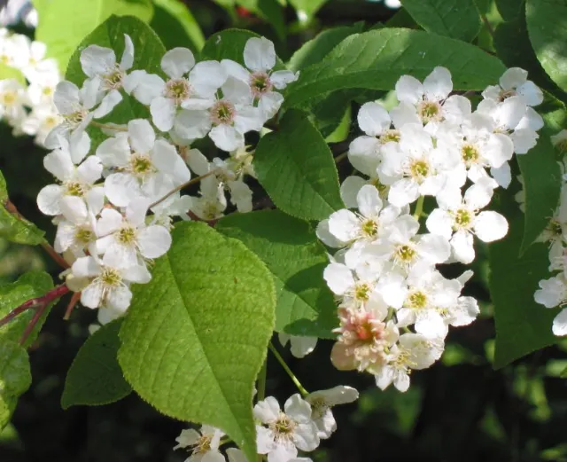

Wild fruit · Aug
Bird cherry
Prunus padus
Also called Hegg
Bird cherry is a wild fruit you can forage from August across Norway. Tree with hanging spikes of almond-scented white flowers in spring; bitter black cherries in late summer.

Caution. Cook it, and don't crush the stones or eat leaves.
When is bird cherry in season in Norway?
Bird cherry is usually in season August. Timing shifts with weather, latitude and altitude.
Where does bird cherry grow in Norway?
Bird cherry grows across Norway. Regions: Eastern Norway, Southern Norway, Western Norway, Trøndelag, Northern Norway.
How do you recognise bird cherry?
Tree with hanging spikes of almond-scented white flowers in spring; bitter black cherries in late summer.
How do you harvest bird cherry?
Pick ripe black clusters in late summer; remember to cook them.
How do you eat bird cherry?
Cooked juice and syrup; dried and ground in the far north.
How do you store bird cherry?
Juice.
What is bird cherry good for?
Vitamin C.
What can you cook with bird cherry?
- Bird cherry juice (heggesaft): Cooked bird cherries strained into a dark, almondy juice.